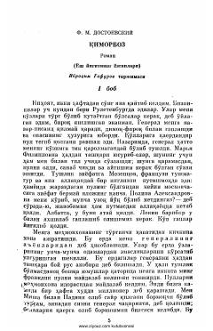

QQimorga qaramlik va inson ruhiyatining murakkab ziddiyatlari haqidagi klassik roman.
Fyodor Dostoyevskiyning "Qimorboz" romani qimorga bo'lgan kuchli qaramlik, inson ruhiyatidagi ziddiyatlar va ehtiroslar talvasasini mahorat bilan tasvirlaydi. Bosh qahramonning ruhiy iztiroblari va qimor o'yini atrofida kechadigan hodisalar inson fe'l-atvorining qorong'i qirralarini ochib beradi. Ushbu mashhur asar Ibrohim G'afurov tarjimasida kitobxonlarga taqdim etilgan.